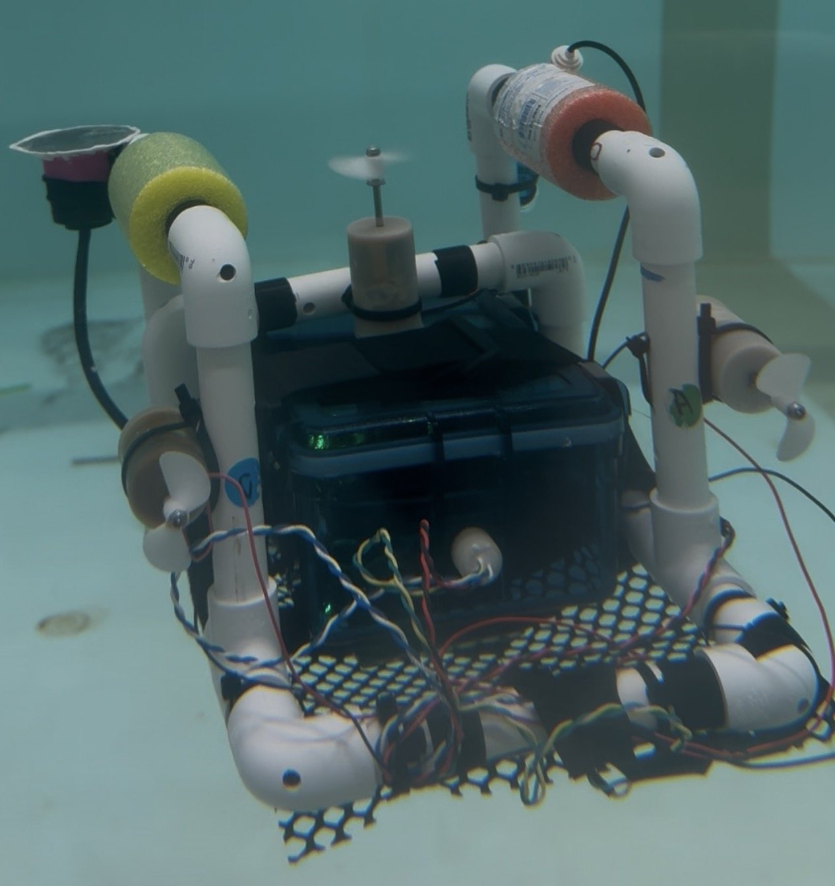
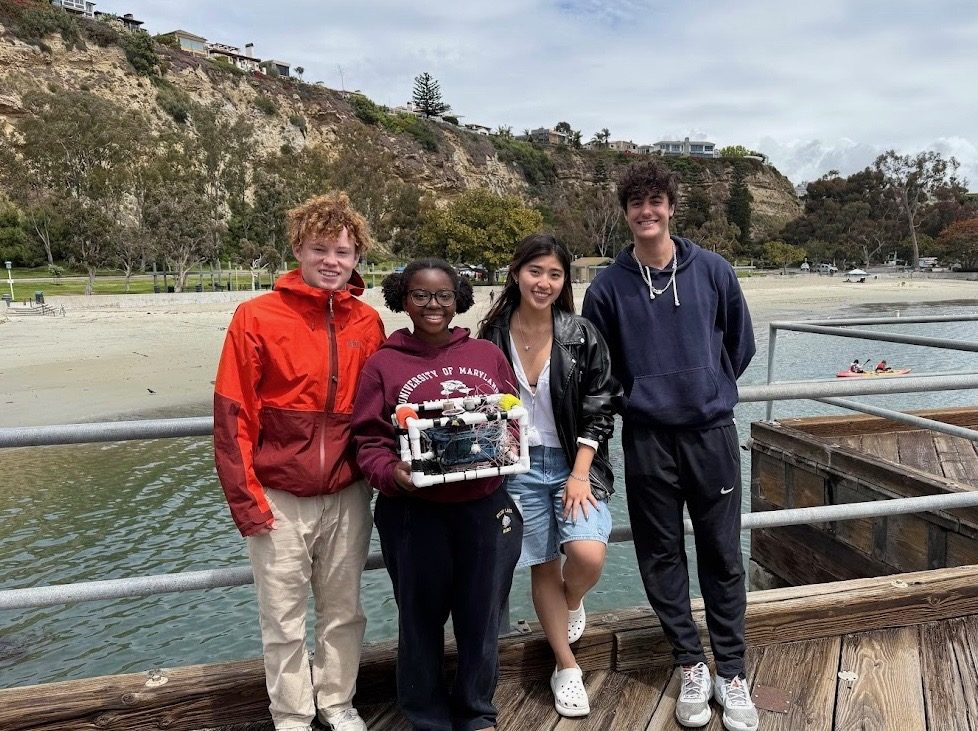
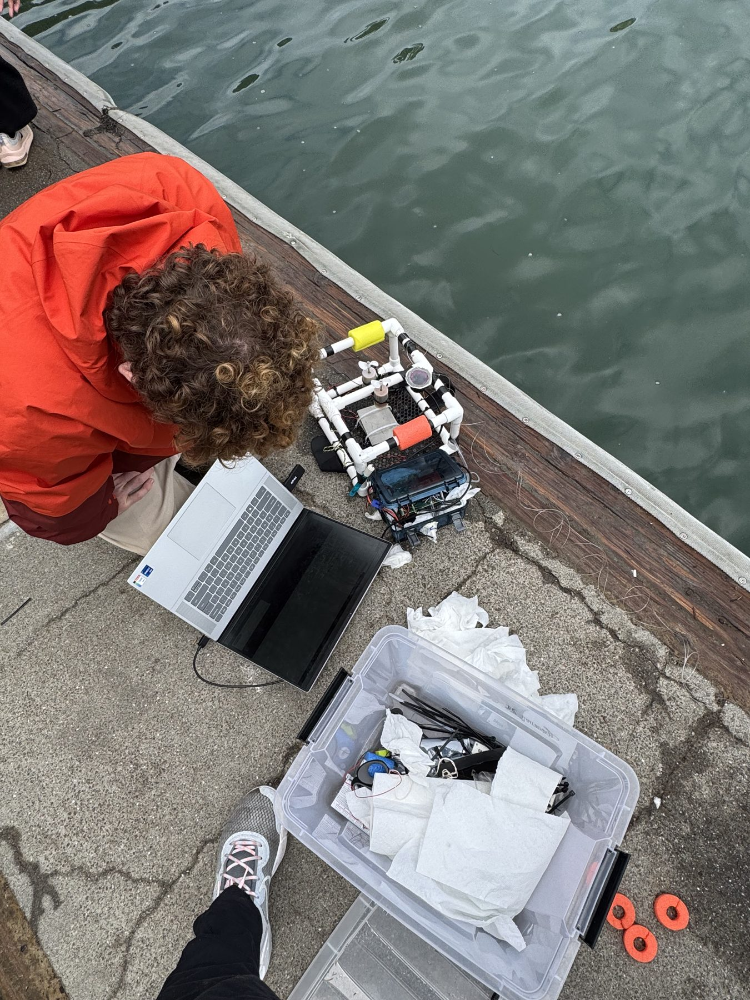
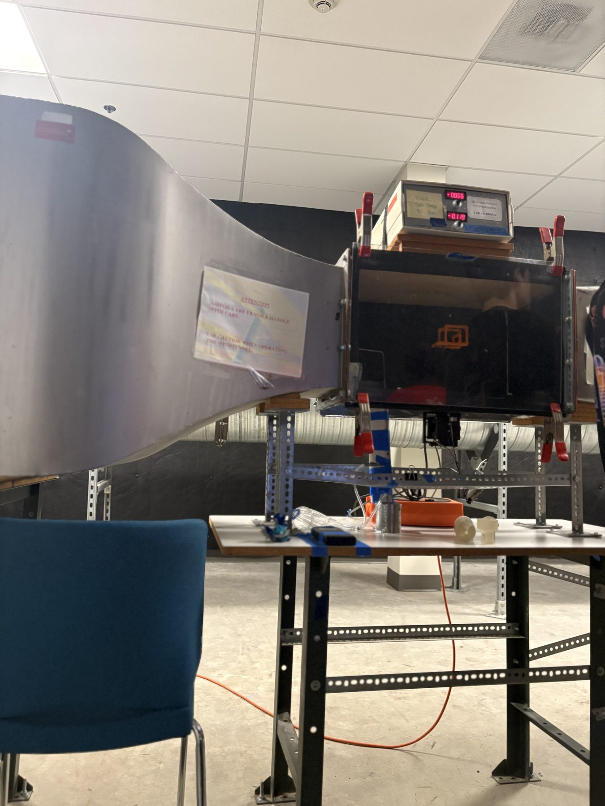
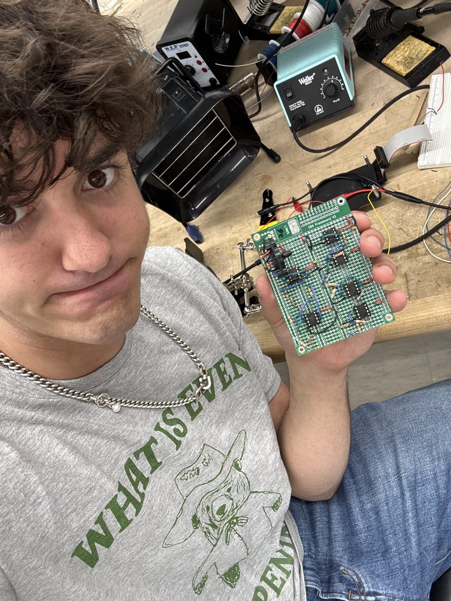

In Harvey Mudd’s E80 Experimental Engineering course, my team spent a semester designing an autonomous underwater vehicle to measure environmental conditions at different depths in Dana Point Harbor. Before deploying, we studied underwater dynamics, tested drag models in a wind tunnel, and ran experiments in water tanks and Phake Lake.
I led much of the electrical integration and waterproofing, working with the Teensy microcontroller, motors, power system, pressure sensor, light sensor, and pH circuit. We implemented closed-loop depth control so the vehicle could move between target depths while collecting data. When our waterproofing failed during testing and the enclosure flooded, we had to recover quickly and rebuild it before the final deployment at Dana Point. That was part of the lesson: testing rarely goes exactly as planned.
At Dana Point, we collected light measurements from depths of about 0.25–1.75 meters and calculated a light attenuation coefficient of approximately 0.59 ± 0.03 m⁻¹. Our team received the highest-rated field dataset.



